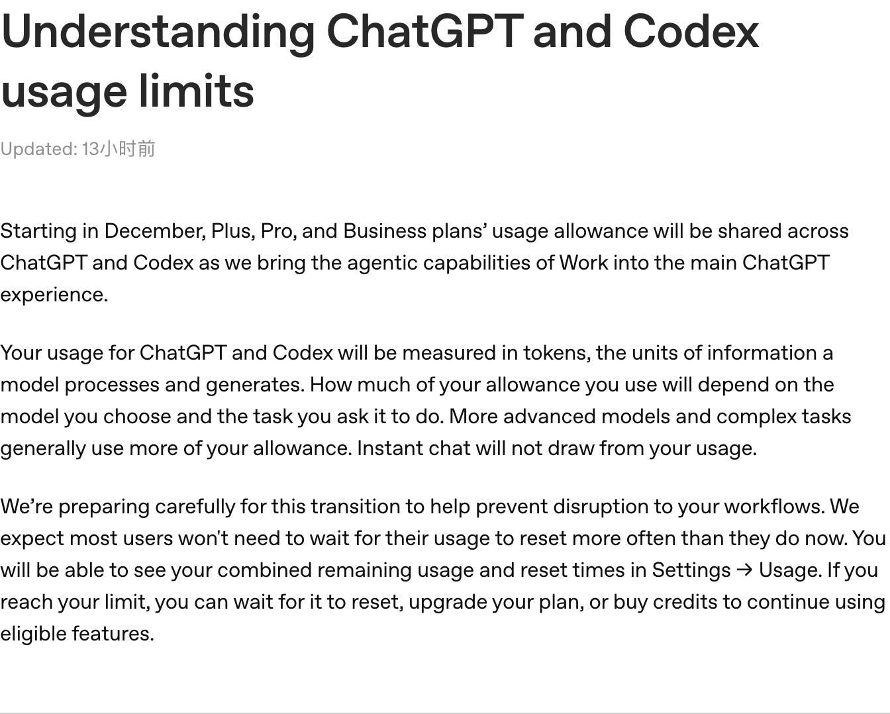
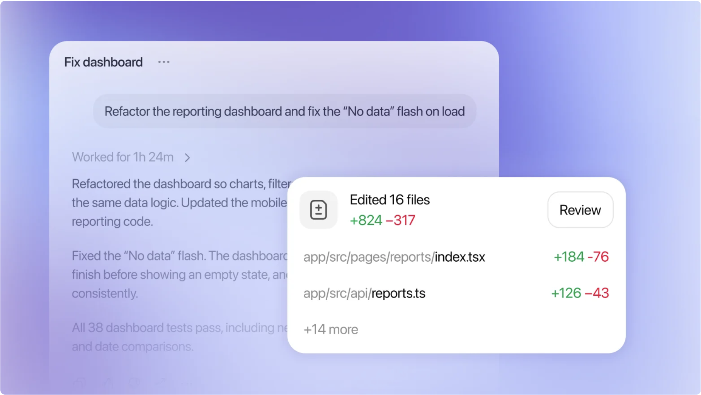
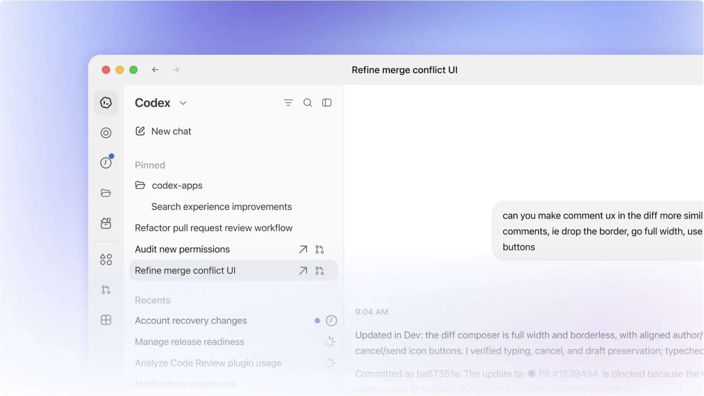

不少开发者已经形成了一套固定工作流：先在 ChatGPT 里讨论需求、推演架构、梳理边界条件，再打开 Codex，让它进入代码仓库读文件、修改代码、运行测试。
方案和代码属于同一项工作，额度却分布在不同入口。对同时重度使用两边的人来说，这多少留有一些余地：当一边的额度紧张时，另一边有时还能继续用。
这种安排即将发生变化。OpenAI 在支持文档中表示，从 2026 年 12 月起，ChatGPT Plus、Pro 和 Business 方案的使用额度将在 ChatGPT 与 Codex 之间共享，用量以 Token 衡量。用户可以在 Settings → Usage 中查看合并后的剩余额度和重置时间。
官方也特别说明：Instant 即时聊天不会消耗这份共享额度。

OpenAI 支持文档中的额度调整说明。
消息出现后，开发者社区里有人提出担忧：上午用 ChatGPT 讨论复杂问题，下午再让 Codex 写代码，这两件事会不会开始争抢同一份额度？
担忧并非没有道理，但目前还不能据此断言订阅已经“变相缩水”。这篇公告没有公布各套餐共享额度的具体数值，也没有提供新旧规则下可完成任务量的对照。新规则会不会让人更早碰到上限，还要看共享池有多大、哪些功能会消耗它，以及具体任务的用量如何计算。
从讨论方案到修改代码，用的是同一份额度？
假设你要给一个业务系统增加审批流程。动手之前，你先在 ChatGPT 里讨论审批状态、并发操作、驳回逻辑和接口返回值。来回几轮后，方案逐渐清晰，你把关键结论交给 Codex，让它查找现有的数据模型和接口，修改相关文件，再运行测试、处理报错。
对开发者来说，讨论和实现是同一个任务的前后两段；但在现有的使用体验中，它们可能属于不同的额度安排。共享之后，如果这两段工作都落在共享池范围内，前面的方案推演用得越多，留给后面工程执行的余地就可能越少。反过来，一次耗时较长的代码排查，也可能影响接下来需要使用共享额度的任务。

OpenAI 展示的 Codex 任务界面，包含任务进度与文件改动。
当然，共享不等于所有聊天都会挤占 Codex 额度。OpenAI 明确表示 Instant chat 不消耗共享额度，只是尚未在这篇公告中逐项列出其他聊天模式和功能的边界。使用深度推理或调用工具时究竟如何计算，还需要看后续规则。
对习惯在两个入口之间切换的人来说，变化在于，以后除了关注当前窗口还能用多少，也要留意此前在另一个入口完成的工作。
按 Token 衡量，不能只看提了几个问题
Token 可以粗略理解为模型处理信息的单位。模型需要处理多少上下文、生成多少内容，以及选择了什么模型、任务有多复杂，都会影响使用量。OpenAI 此次明确表示，ChatGPT 和 Codex 的使用量将以 Token 衡量。
不过，这不意味着 Codex 过去只按消息条数限制，直到现在才开始考虑工作量。Codex 此前就有使用限制，官方文档也说明，模型、上下文和任务复杂度等因素会影响用量。一次单文件修改和一次跨仓库排查，本来就不一定消耗相同资源。
想象一下，你对 Codex 说：“修复这个登录问题。”指令只有几个字，背后的任务却可能包括检查认证流程、搜索配置、阅读日志、修改多个文件，再运行测试。最终提交的代码也许只有几十行，中间的排查却要处理大量信息。
反过来，一段较长但交代清楚问题现象、相关文件和预期结果的描述，也不一定比一句简短指令更浪费。如果它能帮助智能体少走弯路，就可能减少后续搜索和试错。提示词的长短只是表面，真正影响工作量的还有任务范围和执行过程。
至于不同模型、缓存和功能的 Token 如何换算成套餐额度，公告目前没有展开说明。这些细节会直接影响用户能用共享池完成多少工作。
哪些人需要格外留意？
如果平时主要用 Instant 做日常问答，很少使用共享池内的功能，这次变化未必会明显影响体验。更需要关注的，是既依赖复杂推理，又频繁让代码智能体处理长任务的人。
代码任务往往不是写完几行就结束。一个复杂问题可能需要智能体先搜索项目、阅读关联文件、分析依赖关系，随后执行测试、读取报错，再尝试修复。开发者最后看到的也许只是一份不大的代码改动，但在得到它之前，系统已经走过了多个步骤。

OpenAI 展示的 Codex 工作空间，可用于管理不同任务。
这些步骤本身是智能体完成任务的必要过程，也正是它能替人分担工作的地方。只是当不同入口共享额度后，用户可能需要把一次长时间排查的消耗，放进整天的工作安排里考虑：上午让 Codex 反复调试之后，下午是否还有足够额度处理别的复杂任务？
长会话也是类似的情况。讨论架构时，开发者通常要提供现有系统的结构、接口约束和此前尝试过的方案。随着讨论推进，相关背景越来越多，模型需要处理的上下文也可能随之增加。
但“上下文变长可能增加用量”不等于“每一轮都会把全部历史记录重新全价计算”。具体处理方式可能受到上下文管理、摘要、缓存和产品规则等因素影响，目前的公告没有给出足以支持后一种说法的细节。
共享之后，订阅会不会变得不划算？
如果有人原本每天都要在 ChatGPT 讨论方案，再用 Codex 完成大量开发工作，而新规则下经常需要等待额度重置、购买 Credits 或升级套餐，即使订阅价格没变，他也会觉得同样的钱能做的事情变少了。
但现在判断这一点还为时过早。额度合并已经确认，合并后的总量和具体换算方式却没有在公告中完整列出。一个共享池能否覆盖过去两个入口的使用需求，不能仅凭“合并”两个字判断。
OpenAI 的说法是，公司正在为过渡做准备，并预计大多数用户等待额度重置的频率不会比现在更高。用完额度后，用户可以等待重置、升级套餐，或在适用情况下购买 Credits，继续使用相关功能。
官方的预期能否兑现，最终还是要看不同用户的实际工作流。偶尔使用代码智能体的人，可能几乎感觉不到变化；同时高频使用两端的人，则更在意一天或一周内能完成多少任务，而不只是某个功能单独的上限。
因此，接下来值得关注的是更具体的信息：各套餐包含多少共享额度，不同模型和功能如何消耗，用户能否看清一项任务的大致用量。这些问题有了答案，开发者才能比较新旧规则，而不是靠猜测调整工作方式。
OpenAI 为什么要把额度放在一起？
按照 OpenAI 在公告中的解释，这次调整与产品整合有关：公司正在把 Work 的智能体能力带入 ChatGPT 主体验，同时统一 ChatGPT 和 Codex 的额度。
从产品形态看，这个变化有迹可循。聊天工具不再只回答问题，也能调用工具、读取资料并执行多步骤任务；Codex 虽然以编程为核心，也需要理解需求、推理和处理上下文。随着两边承担的工作越来越接近，用户完成一项任务时穿过的产品边界，也没有过去那么清晰。
智能体任务的成本则可能是另一层背景。普通问答通常在模型回复后结束；一项复杂的智能体任务可能连续调用模型和工具，执行命令，再根据结果继续尝试。用户只发出一次指令，背后发生的计算却可能持续很久。
不过，成本压力在这里仍然是基于产品形态的分析。OpenAI 没有在这次公告中披露调整背后的成本数据，也没有说明过去的额度安排是否造成亏损。
对用户来说，产品走向统一并不难理解，难的是在新规则下规划工作。如果不同任务开始共用资源，额度面板能否解释清楚“用了多少、还剩多少、什么时候重置”，就会直接影响使用体验。
现在可以做的几件事
距离新规则生效还有一段时间，与其急着更换工具，不如先观察自己的一项完整任务是怎么消耗额度的。选一个有代表性的开发工作，记录从需求讨论、代码修改到测试排错分别使用了哪些模式和工具。等新规则上线后，再找相近任务对照，才能判断变化对自己的影响。
对于持续时间较长的项目，可以在一个阶段结束时整理需求边界、关键决策和待办事项，再根据需要开启新会话。这样既方便接续工作，也可能减少后续处理无关上下文的需要。不过，频繁重开并不一定更省：如果每次都要重新解释大量背景，反而会增加工作量。
给 Codex 派任务时，也可以多交代一点有效信息，例如问题现象、可能相关的模块、期望结果和验证方式。不熟悉项目时，无须强行找出所有文件；探索本来就是智能体的工作之一。把已经知道的线索交给它，能让排查有一个更明确的起点。
至于日常使用，简单问题可以交给适合的即时聊天模式，复杂推理和多步骤执行再使用相应能力。Instant 不消耗这次公告所说的共享额度，但它是否适合某项工作，仍要看任务本身；官方的这项说明也不代表 Instant 在所有情况下都没有其他限制。
等待那本更清楚的账
这次公告给出了方向：从 12 月开始，部分套餐的 ChatGPT 和 Codex 使用额度将共享，使用量以 Token 衡量，Instant chat 不消耗这份共享额度。
开发者关心的下一步，是这套规则落地后能支持多少实际工作。共享池有多大、哪些功能进入池子、原来一整天的任务还能否顺畅完成，都需要更详细的说明和上线后的体验来回答。
当方案讨论和工程执行开始共用资源，用户要盘算的，也从单个工具还能不能继续用，变成了一项工作从想法走到落地，需要花掉多少额度。